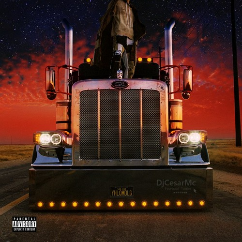

Álbumes
Esta es la discografía del rapero y cantante puertorriqueño Bad Bunny. Se compone de cuatro álbumes de estudio, un album colaborativo, sin contar con aproximadamente 27 sencillos como artista principal y 50 como artista invitado.
Un verano sin ti
Es el cuarto álbum de estudio en solitario y quinto en general del rapero y cantante puertorriqueño Bad Bunny. Fue lanzado el 6 de mayo de 2022 por Rimas Entertainment luego del lanzamiento de su disco anterior El último tour del mundo (2020). El álbum contiene veintitrés pistas. y cuenta con las colaboraciones de Chencho Corleone, Jhay Cortez, Tony Dize, Rauw Alejandro, Bomba Estéreo, the Marías y Buscabulla.

El ultimo tour del mundo
El último tour del mundo es el tercer álbum de estudio en solitario, el cuarto en general, del rapero y cantante puertorriqueño Bad Bunny. Se lanzó el 27 de noviembre de 2020 por Rimas Entertainment, solo nueve meses después de su trabajo discográfico anterior, YHLQMDLG. Está compuesto por dieciséis temas y cuenta con apariciones especiales de Jhay Cortez, Rosalía y Abra.
Las que no iban a salir
Las que no iban a salir es un álbum recopilatorio del rapero y cantante puertorriqueño Bad Bunny. Se estrenó el 10 de mayo de 2020 a través de Rimas Entertainment. Presenta apariciones especiales de Zion & Lennox, Yandel, Don Omar, Nicky Jam, Jhay Cortez.

YHLQMDLG
YHLQMDLG es el segundo álbum de estudio en solitario del rapero y cantante puertorriqueño Bad Bunny. Se lanzó el 29 de febrero de 2020 por Rimas Entertainment.Presenta apariciones especiales de Daddy Yankee, Arcángel, Sech, Anuel AA, Yaviah, Kendo Kaponi, Jowell & Randy, Ñengo Flow, entre otras. El álbum fue lanzado solo dos días después de su anuncio.Alcanzó el número dos en el Billboard 200 de Estados Unidos.

Oasis
Oasis es un álbum de estudio colaborativo entre el cantante colombiano J Balvin y el rapero puertorriqueño Bad Bunny. El álbum abarca desde el Reguetón al Latin Trap e incluye leves pinceladas de folclore latino y Jazz, presenta ocho canciones. En este álbum, están incluidas las participaciones de Marciano Cantero (Es reconocido principalmente como el líder y cantante de la banda de rock Los Enanitos Verdes) y Mr. Eazi.
X 100pre
Es el álbum de estudio debut del rapero y cantante puertorriqueño Bad Bunny. Fue anunciado el 23 de diciembre de 2018 y lanzado en Nochebuena, el 24 de diciembre de 2018 a través de Rimas Entertainment. El álbum cuenta con colaboraciones de Diplo, El Alfa y Drake. Esta considerado como uno de los 500 mejores álbumes musicales de todos los tiempos, según la revista Rolling Stone, ocupando el puesto numero 447.